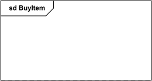
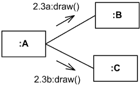
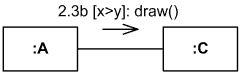
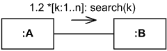

Communication Diagrams Reference
| Notation | Description |
|---|---|
| Frame | |

Interaction frame for communication diagram BuyItem. |
Communication diagrams could be shown within a rectangular frame with the name in a compartment in the upper left corner. There is no specific long form name for communication diagrams heading types. The long form name interaction (used for interaction diagrams in general) could be used. |
|

Sd Frame for Communication Diagram BuyItem. |
There is also no specific short form name for Communication Diagrams. Short form name sd (which is used for interaction diagrams in general) could be used. This sd is bit confusing as it looks like abbreviation of sequence diagram. |
| Lifeline | |

Lifeline with name "data" of class Stock. |
A lifeline is shown as a rectangle (corresponding to “head” in sequence diagrams). Lifeline in sequence diagrams does have "tail" representing the line of life whereas "lifeline" in communication diagram has no line, just "head". |
| Anonymous Lifeline | |

Anonymous lifeline of class User. |
Anonymous lifeline has no name - arbitrary representative of class. |
| Lifeline with Selector | |
![Lifeline x selected with [k] of class X.](notation/communication-lifeline-selector.png "Lifeline x selected with [k] of class X.")
Lifeline "x" of class X is selected with selector [k]. |
Selector could be used to specify some lifeline from collection. |
| Sequential Messages | |

Instance of A sends draw() message to instance of B, and after that B sends paint() to instance of C. |
The sequence expression is a dot separated list of sequence terms followed by a colon (":"). Message name follows the sequence expression.
sequence-expression ::=
sequence-term '.' . . . ':'
message-name
The integer represents the sequential order of the message within the next higher level of procedural calling (activation). |
| Concurrent Messages | |
|

Instance of A sends draw() messages concurrently to instance of B and to instance of C. |
The name in sequence expression represents a concurrent thread of control. Messages that differ in the final name are concurrent at that level of nesting. |
| Conditional Messages | |
|

Instance of class A will send message draw() to the instance of C, if x > y. |
A guard specifies condition for the message to be sent (executed) at the given nesting depth. UML does not specify guard syntax, so it could be expressed in pseudocode, some programming language, or something else. sequence-term ::= [ integer [ name ] ] '[' guard ']' |
| Sequential Loop | |
|

Instance of class A will send search() message to instance of B n times, one by one. |
An iteration specifies a sequence of messages at the given nesting depth. UML does not specify iteration-clause syntax, so it could be expressed in pseudocode, some programming language, or something else. Iteration clause may be omitted, in which case the iteration conditions are unspecified. sequence-term ::= [ integer [ name ] ] '*' [ '[' iteration-clause ']' ] |
| Concurrent Loop | |

Instance of class A will send n concurrent search() messages to instance of B. |
An iteration specifies a sequence of messages at the given nesting depth. UML does not specify iteration-clause syntax, so it could be expressed in pseudocode, some programming language, or something else. Iteration clause may be omitted, in which case the iteration conditions are unspecified. The *|| (star followed by a double vertical line) iteration notation specifies concurrent (parallel) execution of messages. sequence-term ::= [ integer [ name ] ] '*||' [ '[' iteration-clause ']' ] |